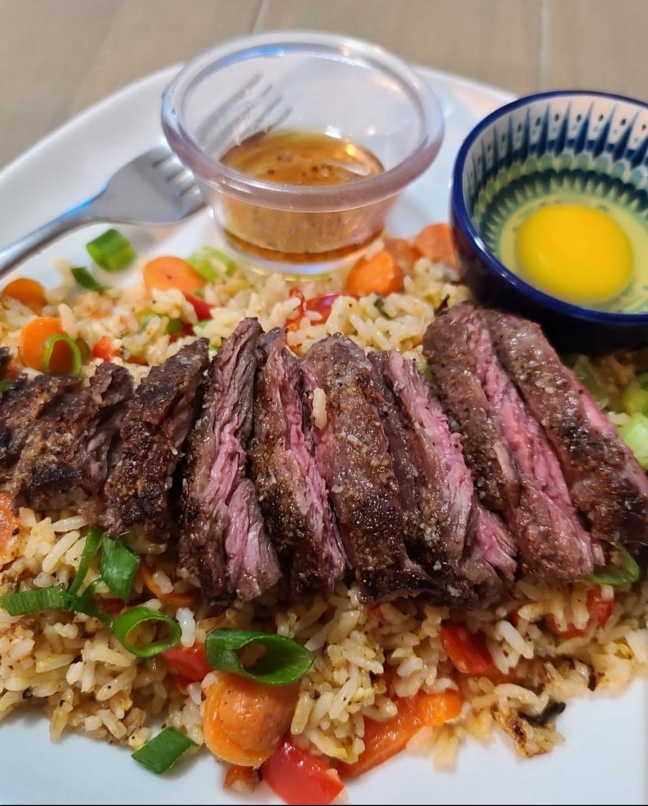

CaribbeanDinnerMeatWeeknight Meal30 minutes or less

Latin American dish featuring juicy, marinated grilled steak served alongside fluffy, seasoned white rice. Flavors from garlic, citrus, and spices serves as a perfect savory meal for lunch or dinner straight from the grill.
Ingredients
Churrasco
1.5 to 2 pounds skirt steak or flank steak
4 cloves garlic, minced
1 tbsp olive oil
2 tbsp fresh lime juice
1 tbsp white vinegar
1 tsp ground cumin
1 tsp dried oregano
Salt to taste
Pepper to taste
Arroz
1 tbsp olive oil or butter
1 small onion, finely chopped
1 clove garlic, minced
1 cup long-grain white rice
2 cups chicken broth or water
Salt to taste
1.5 to 2 pounds skirt steak or flank steak
5 cloves garlic, minced
2 tbsp olive oil
2 tbsp fresh lime juice
1 tbsp white vinegar
1 tsp ground cumin
1 tsp dried oregano
1 small onion, finely chopped
1 cup long-grain white rice
2 cups chicken broth or water
Salt to taste
Pepper to taste
Directions
Marinate the steak with garlic (4 cloves), olive oil, lime juice, vinegar, cumin, oregano, salt, and pepper. Let sit for at least 30 minutes.
While the steak marinates, prepare the arroz: sauté onions and garlic in oil or butter until soft.
Add rice and stir to coat. Pour in broth, add salt, and bring to a boil. Cover and simmer until cooked (about 18 minutes).
Grill the steak on high heat for 3–4 minutes per side, depending on thickness and desired doneness.
Let steak rest for a few minutes before slicing thinly against the grain.
Serve churrasco with arroz on the side.
Comments
Profile_1
Absolutely delicious! The steak was juicy and full of flavor. The arroz paired perfectly. Definitely making this again!
★★★★★
Profile_2
Loved the marinade — super easy to make and tasted just like what I had in Cuba. Thanks for the clear directions
★★★★★
Profile_3
I substituted chicken broth with veggie broth and it still turned out great. Perfect for a family dinner
★★★★★
Profile_4
The instructions were spot-on. I was a bit nervous about the rice, but it came out fluffy and flavorful
★★★★★
Profile_5
Five stars! The lime and garlic combo on the steak was incredible. Added some chimichurri on top too!
Comments
Profile_1
Absolutely delicious! The steak was juicy and full of flavor. The arroz paired perfectly. Definitely making this again!
Profile_2
Loved the marinade — super easy to make and tasted just like what I had in Cuba. Thanks for the clear directions
Profile_3
I substituted chicken broth with veggie broth and it still turned out great. Perfect for a family dinner
Profile_4
The instructions were spot-on. I was a bit nervous about the rice, but it came out fluffy and flavorful
Profile_5
Five stars! The lime and garlic combo on the steak was incredible. Added some chimichurri on top too!